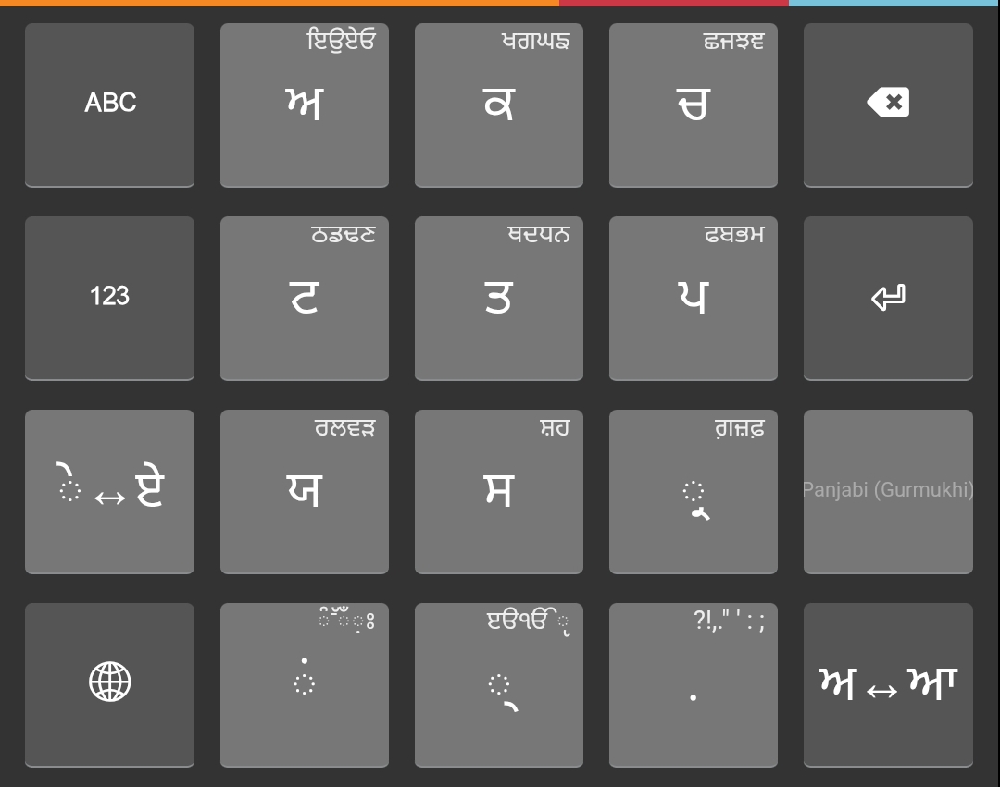

A mobile keyboard layout designed for punjabi, utilizing a flick input method. Inspired by the Hindi Flick Keyboard, as seen on Keyman. (A little too much)
Punjabi Flick is based on the clustering of syllables according to the area of the mouth used that is inherent to Gurmukhi and many other Indian scripts. Thus, we get a character set of 33 consonants. In addition, there are 12 vowels, out of which 10 are actually part of a pair of short and long vowels.
We utilise these two facts - that there are upto 5 related consonants per consonant cluster, as well as that there are 10 pairs of short and long vowels, to be able to create a keyboard that encompasses nearly 50 characters (along with punctuation etc.) into only 12 keys. In addition, by adding numerous rules to the parser, we are able to correctly preserve the phonetic order of the characters and diacritics, something especially important for syllabic scripts (also known as abugidas) like Gurmukhi.

Each akshara (syllable) key is equipped with the ability to produce not only the character on the key, but 3-8 other related characters from its cluster (i.e. varga). This is done by flicking the key in the direction of the desired character. For example, flicking the ਕ key to the right will produce ਖ, flicking it up will produce ਗ, and so on. The characters available on flicking are displayed on the key itself. They are ordered in clockwise order starting from the left. For keys with more than 4 options, the order continues from the top left corner of the key.
Each of these options can also be accessed by holding the key for at least a second, which brings up a list of the available characters to choose from.
Finally, you can also cycle through the characters available by tapping on the key multiple times.
Vowels and their diacritics play a central role in designating sounds to consonants in most Indian scripts.
If you notice, the only vowels available on the key are the short vowels ਅ, ਇ, ਉ, ਏ, ਓ. This is to utilise the fact that each of these vowels has a corresponding long vowel, and thus there is no need to clutter the key with these. Instead, we provide the key ਅ↔ਆ which converts short vowels to long vowels and vice versa. This also works on their matras (diacritics).
For example, ਕ + ਇ = ਕਿ, and pressing ਅ↔ਆ makes it ਕੀ.
Speaking of diacritics, all the vowels have the corresponding diacritics as their output when a consonant is found as the previous character (except ਅ, which outputs the ਾ diacritic, as each consonant has the ਅ sound by default and ਾ is probably one of the most frequently used matras). The keyboard has rules in place to dictate what should happen in different scenarios. A few of these include:
Sometimes, it is not desired to put a matra right after a consonant, but rather a full vowel. This is where the ੇ↔ਏ key comes in. It converts the matra to a full vowel and vice versa. For example, ਕ + ੇ = ਕੇ, and pressing ੇ↔ਏ makes it ਕਏ.
An example of a word I can imagine this would be real helpful for is ਕਈ (many), where the ਈ is a full vowel and not a matra.
The halant is a special character in Gurmukhi that is used to remove the inherent vowel sound from a consonant. It is used to create conjuncts, and is also used in many other scenarios. The halant key is placed at the bottom of the keyboard. Similar to the 12-kana keyboard, it also contains the flick-keys for parentheses, the Gurmukhi abbreviation sign, and a dash.
The tenth key in the keyboard contains the bindu (ਂ), adak bindi (ਁ), visarga (ਃ), tippi (ੰ), addak (ੱ) and nukta (਼) characters. The keyboard automatically handles the placement of these characters when a vowel is added after them.
A particular note for nuqtas, the order utilised (as with other parts of the keyboard) is consonant + nuqta + matra. Even if you add a matra first, the nuqta will be placed after the consonant. This is to ensure that the nuqta is always placed after the consonant, as is the norm in Gurmukhi.
Copyright © SIL Global